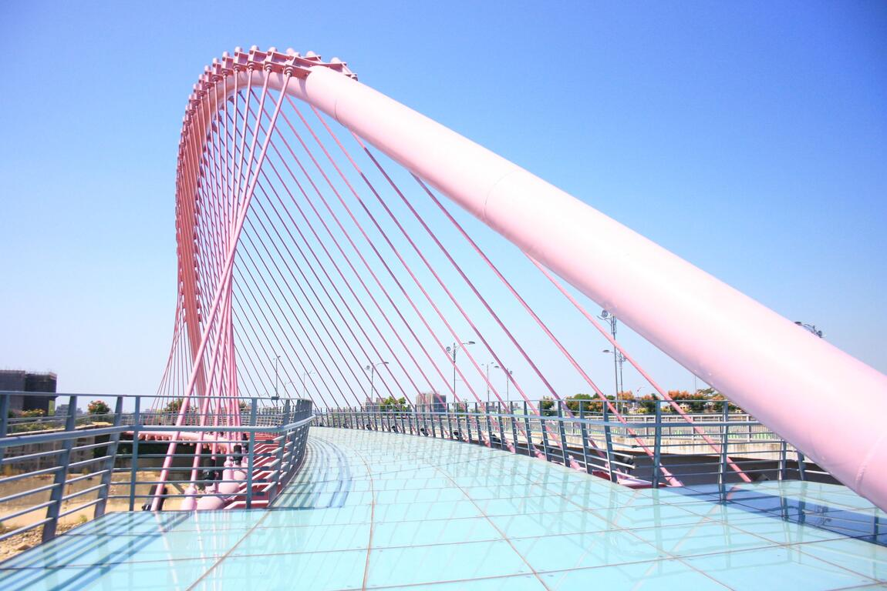

位於臺中市北屯區，屬於大坑頭嵙山系。面積廣達3300多公頃，海拔自112公尺至859公尺，北接新社區中興嶺，東臨頭嵙山，南接廍仔坑溪，西臨大里溪。 區域內有大坑溪、濁水坑溪、清水坑溪、橫坑溪、北坑溪及廍仔坑溪等六條溪流。包含30多種的落葉樹，在乾濕季節交替之際，景色可媲美奧萬大的秋風落葉，具備全臺中市自然度最高的特質。

921大地震後，車籠埔斷層穿越大坑，地層劇烈變動後，發現了溫泉資源，因而開啟了新的觀光型態。